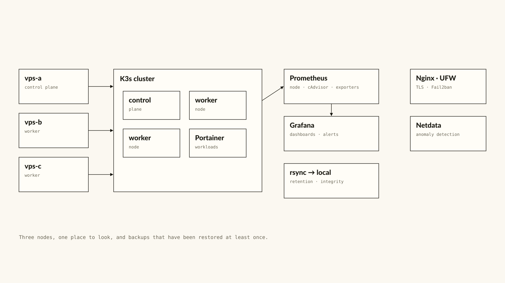
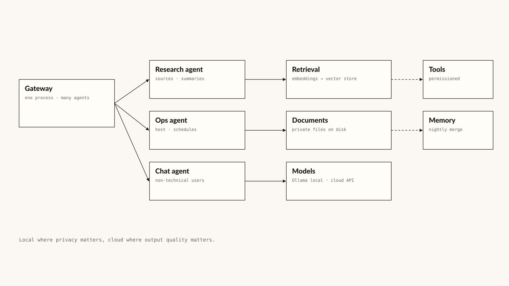
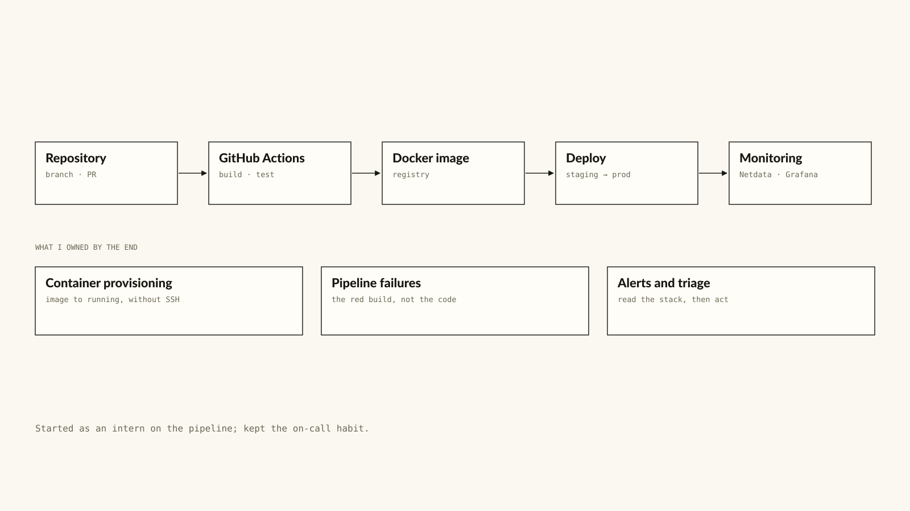
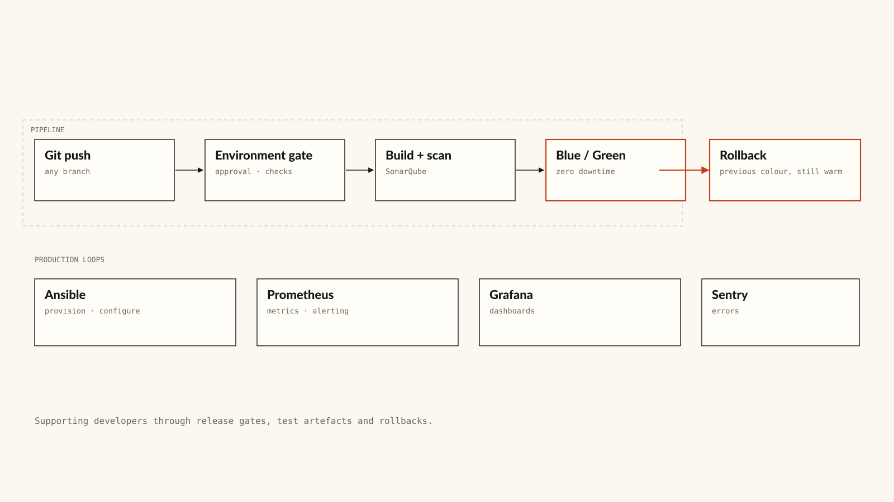
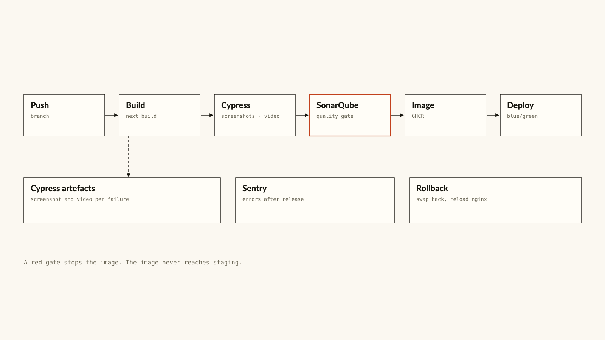
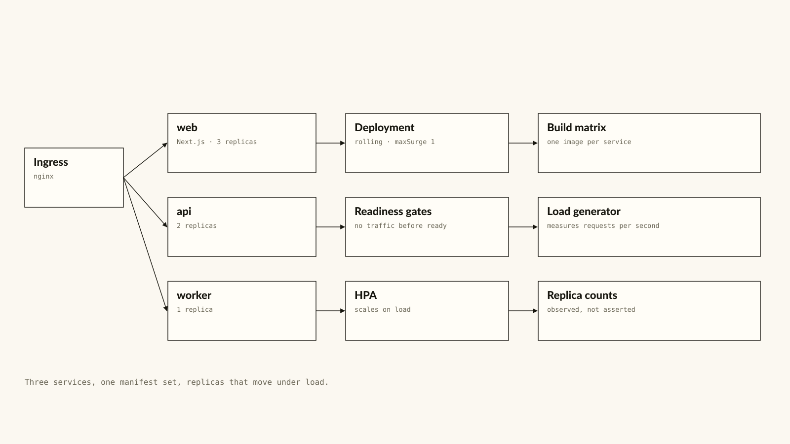
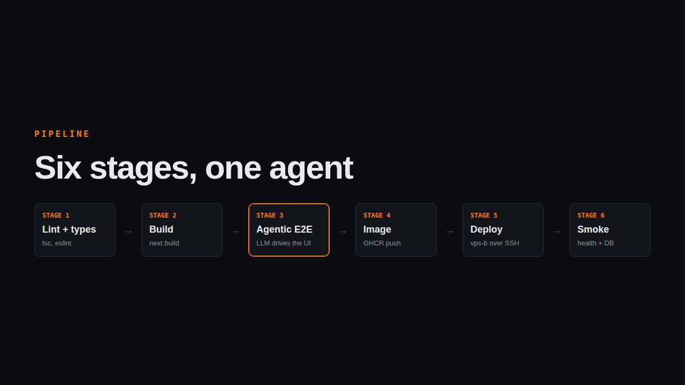
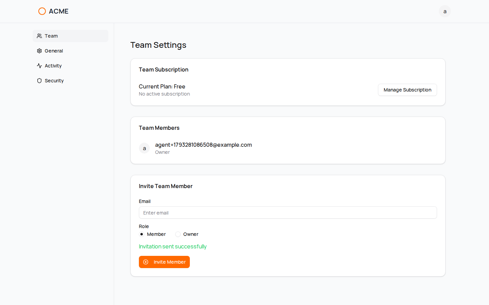
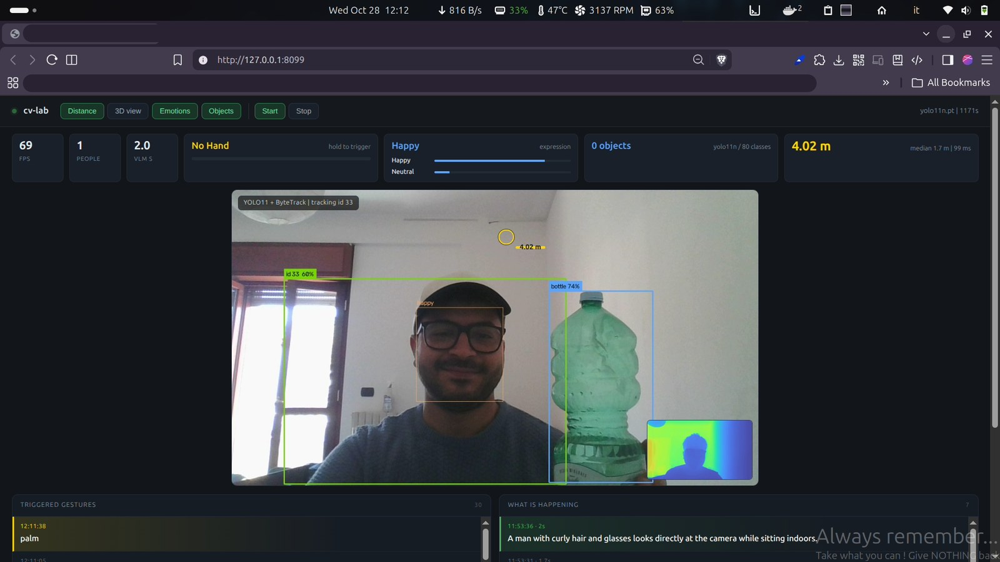
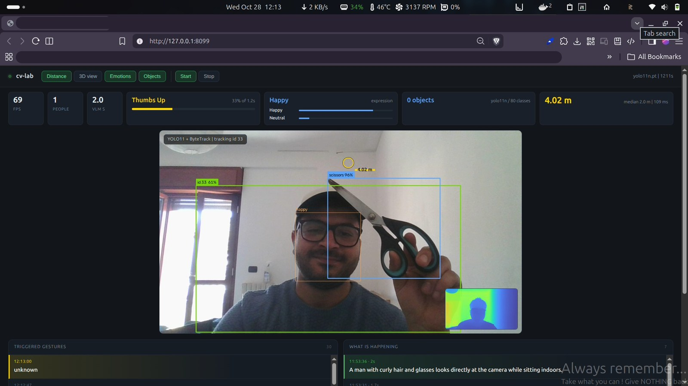

Self-hosted K3s, monitoring and backups | 2026 - present

Fig. 04 · Control plane, two workers, one place to look
My home lab is where I test things before I trust them. It runs on VPS servers and covers the full loop: a Kubernetes cluster, workloads deployed to it, monitoring that actually alerts, and backups that have been restored at least once.
Kubernetes Cluster
A K3s cluster with one control plane node and two workers. Workloads are declared in manifests, released with rolling updates and organized with namespaces. The cluster is managed through Portainer, which keeps nodes, workloads and logs in one place. Containers that used to run directly on the hosts were migrated into the cluster, so there is one place where workloads live and one place where they are observed.
Monitoring and Backups
Grafana and Prometheus collect metrics from cAdvisor, node and blackbox exporters, covering containers, hosts and endpoints, with Netdata alongside for real-time metrics and anomaly detection. Servers and databases are backed up on a schedule to my local server with rsync, with a retention policy, integrity checks and failure notification.
Three-node K3s cluster: control plane plus two workers, managed with Portainer
Grafana, Prometheus and Netdata with alerting on container, host and endpoint health
Scheduled backups with retention, integrity checks and tested restores
Hardened with UFW, Fail2ban, key-based SSH and Nginx as a TLS reverse proxy
Hybrid setup: self-hosted locally and running online | per-agent tuning

Fig. 02 · One gateway, three agents, one retrieval path
A retrieval-augmented generation stack that gives my agents long-term memory instead of a blank context on every run. The local version mirrors the online one and adds more agents, each tuned for a specific task.
Retrieval
Notes and documents are embedded locally, stored in an index, and retrieved at query time, so answers come from real stored context instead of guesswork. Retrieval is hybrid: keyword matching and vector similarity run together, then results are re-ranked so the context is not five paraphrases of the same paragraph.
Per-agent tuning
Each agent has its own temperature setting, from 0.3 for deterministic, factual retrieval up to 1.9 for creative, high-variance generation. Temperature is a deliberate design choice for every agent, not a default nobody looks at.
Autonomous monitoring agent
A separate agent runs automated tests against my servers on its own schedule, detects anomalies and reports them, instead of waiting for me to notice downtime. It complements the metrics stack: proactive checks on top of passive dashboards.
Lab-to-lab link
The online RAG reaches my local lab over SSH keys, with no passwords and no shared secrets. Permissions are scoped so the link can do exactly what it needs and nothing more, which means an exposed entry point cannot reach the rest of the lab.
Local embeddings, so documents stay on my own machines
Hybrid retrieval: keyword plus vector search, with re-ranking
Per-agent temperature from 0.3 for factual work up to 1.9 for creative work
Monitoring agent running scheduled checks and reporting anomalies
Online-to-local link over SSH keys, scoped with least privilege
Kept local for privacy, cost control and fast iteration, using the same patterns as the cloud version
TrendTech (part of TrendX) | Jun 2026 - present, started as an intern

Fig. 05 · Where the internship started, and what it turned into
I joined as a DevOps intern on a live production product: a Next.js front end, headless WordPress, and a database, all running in containers. This is where I moved from managing servers to owning delivery.
Managed Docker containers with Docker Compose and automated container provisioning through the Portainer API from GitHub Actions, removing SSH access from the deployment path
Managed Kubernetes pod deployments triggered by GitHub Actions pipelines
Configured and provisioned multiple Droplets with Ansible playbooks
Set up the full monitoring stack: Grafana and Prometheus with cAdvisor, node and blackbox exporters, plus Netdata with the Docker plugin
Managed Nginx configuration inside zero-downtime update pipelines across staging, dev and prod branches, including cleanup of staging containers and configs
Ran the production pipeline: Cypress staging tests with screenshot and video artifacts, lint and format checks, then zero-downtime Blue/Green deployment after developer confirmation
TrendTech (part of TrendX) | taken on full time after the internship

Fig. 06 · Gates, colours and a rollback that stays warm
The internship turned into a full-time position. Instead of a single project, I now manage the whole stack together with the DevOps team.
Day to day this means keeping production applications shipping without downtime, keeping the monitoring honest, and making sure a deployment can be reversed in one step if it goes wrong.
CI/CD pipelines, including the staging to dev to prod promotion flow
Maintain the monitoring and alerting stack that production relies on
Handle Nginx configuration and release flows with zero downtime
Support developers through release gates, test artifacts and rollbacks
Work across different project types: Laravel, Next.js, WordPress and smartphone apps
GitHub Actions to GHCR to Blue/Green | Next.js, WordPress, Cypress | TrendTech

Fig. 07 · Where the gate stops the image
The pipeline that ships a Next.js front end with a headless WordPress back end. It runs on GitHub Actions, deploys over SSH into a blue/green pair, and only promotes a build once it has answered a health check and passed its smoke tests. Nothing reaches production on a hope.
From push to live
idle
1Pushcommit on develop triggers the workflow
2BuildNext.js + WordPress images tagged :sha into GHCR
3DeploySSH + compose into the idle slot; old previews reaped
4Verifyhealth check on both services, then Cypress smoke test
5Releaseblue/green swap and nginx reload, zero downtime
Production traffic
GREEN · liveprod · previous commit
BLUE · idlestaging · new commit verified
Promotion swaps the roles and reloads nginx — the previous color stays ready for a one-command rollback.
What runs on every push
Build once, tag immutably. Both images are built with Docker Buildx and pushed to GHCR under the commit SHA, so every deployed version traces back to an exact commit.
One deploy at a time. A concurrency group serializes runs per branch, so a second push waits instead of fighting the first for the same ports.
A single preview, never two. Each run reaps the previous staging stack first, so a forgotten preview can never linger and eat resources.
Health gates before traffic. The new instance has to return 200 on the front end and on the WordPress REST API before it counts as up; the pipeline polls for it instead of assuming.
Tests against the real target. The Cypress smoke suite runs against the freshly deployed URL, and screenshots and video are uploaded even on a red run.
Zero-downtime promotion. Traffic moves to the other color and nginx reloads, so a release never drops a request.
Blue/Green and rollback
Two identical slots, GREEN and BLUE, sit on the data plane. One serves production, the other is free for the next build; staging runs in the idle slot, so both live on the same machine without colliding. When a release is promoted the roles swap and nginx reloads against vhosts generated from a small state file that records the current and previous color. Rolling back is one server-side command that swaps the roles back — code only, no rebuild.
Build matrix, rolling updates with replicas, readiness gates, autoscaling | Next.js + API + worker

Fig. 08 · Three services, replicas that move under load
A blueprint I use to explain how I would ship a multi-service client application: three independent services, one cluster, and a delivery flow that replaces the running app without ever taking it down. Each service builds, deploys and scales on its own, and the cluster holds the capacity line while the swap happens.
The services
web — the Next.js front end, three replicas behind the ingress, replaced with a surge so capacity never dips.
api — a stateless API on two replicas, and the first thing the autoscaler grows under load.
worker — a queue consumer on a single replica, deliberately kept out of the request path.
postgres and redis — stateful, versioned and backed up on their own schedule, never rolled with the app.
From commit to cluster
idle
BuildTestScanRolloutProbeTrafficScale
Build matrixidle
web—
api—
worker—
Clusternamespace: prod
web3 ready
api2 ready
worker1 ready
Requests per second180
HPA target 70% CPU3 web2 api—
What the rollout guarantees
Rolling update, maxSurge=1 maxUnavailable=0. A new pod is surged in before an old one is retired, so available replicas never drop below the declared number — which is why the animation shows four pods for a three-replica service during the swap.
Readiness probes gate traffic. A pod only enters the Service endpoints once it answers /healthz; the ingress never routes to a container that is still booting.
Liveness probes recover the pod. A wedged process is restarted in place instead of quietly serving errors until someone notices.
The old ReplicaSet is kept. A rollback is kubectl rollout undo — the previous version is already there, no rebuild.
Resource requests and limits on every container. A noisy service cannot starve its neighbours on the same node.
HPA on CPU and requests. A traffic spike adds replicas instead of latency, and scale-down is damped so the deployment does not flap.
How I would roll it out for a client
I would not send a release straight to 100%. The same pipeline runs a canary first: the new version takes a small slice of traffic while error rate and latency are watched on the dashboards, and only then does the ingress point everything at it. If the numbers move the wrong way, the rollback is the same single command. The pipeline is the easy part — what matters is that a deploy is boring, reversible, and leaves a trail.
Fig. 09 · Seven snapshots, 18 GB on disk for 108 GB of logical data
Containerized backup jobs that pull from the servers over rsync, keep a chain of snapshots on a destination host, apply their own retention policy, and verify what they stored. The design goal is simple: a restore should be boring, and a silent failure should be impossible.
Steps 1–5 run today on the servers: the schedule, the rsync transfer, the snapshot chain, the integrity checks and the retention policy are all in production. The status record and its dashboard (step 6) are in progress.
What makes it a backup and not a hope
Snapshots, not copies. Each run writes a complete snapshot but links unchanged files to the previous one, so you keep a full history while only paying for what changed.
rsync moves only what changed. A nightly run over 18 GB typically transfers a few hundred megabytes, and the record keeps that ratio so a regression to full transfers is visible.
Retention is part of the run. Pruning happens in the same job that creates the snapshot, so it cannot quietly stop happening in the corner of a script nobody runs any more.
Checksums before trusting it. The job verifies what it wrote. A snapshot that has not been read back is a guess, not a backup.
Restores are drilled, not assumed. A scheduled job restores the latest snapshot to a scratch path and checks it, so "we have backups" stays a tested claim.
Backups pull, they do not push. Only the destination holds a key into the sources, so a compromised server cannot reach in and delete its own history.
Status dashboard in progress
Knowing that a job ran and knowing that what it wrote is good are two different problems. The status layer I am building for this starts from one rule: a job may only report success if it finished the entire run, so a missing record means the job is presumed broken. That turns silence into the alarm instead of the thing that hides the problem.
Age, not just status. The metric the dashboard leads with is the age of the newest verified snapshot per job. A backup that quietly stopped three weeks ago still shows green if all you track is the last exit code.
Staleness alerts. A job is flagged when its last good run is older than 1.5× its expected interval, which catches the dead job that a failure alert never fires for.
One record per run. Each job writes a single machine-readable status file when it finishes — duration, bytes, files, snapshot path, verify result, what it pruned.
Reuse the stack I already run. Prometheus and Grafana are already up, so the first version is a textfile exporter and a panel — the dashboard page comes after the metric.
Drill status alongside backup status. Backed up and recoverable stay two separate facts, and only one of them is worth anything.
Fig. 01 · Six stages, and the verdict outside the model

Fig. 08 · Six stages, lint to smoke

Fig. 09 · The app the agent drives, after the journey
A six-stage pipeline where the end-to-end test is performed by an LLM agent instead of a fixed script. The reason is boring and real: scripted tests memorise selectors and labels, so renaming a button turns the suite red while the product is fine. An agent reads the page and pursues a goal instead — but an agent's opinion is not a verdict, so the pipeline never asks it for one.
The six stages
Lint and typecheck — the cheap gate, first.
Build — Next.js production build in the runner.
Agentic E2E — the agent drives a real browser through Playwright, one action per turn chosen from a DOM snapshot: click, fill, goto, done. No selectors, no page objects.
Image — multi-stage Docker build pushed to GHCR.
Deploy — SSH to a Hetzner VPS, migrations run on boot.
Smoke — the health endpoint has to answer with the database up, not just answer.
Why the agent does not grade itself
After the journey the pipeline queries PostgreSQL and asserts the row the journey was supposed to create. The agent acts, the database decides. The model can be wrong about what it saw, drift on a long flow or click something that looks plausible; it cannot fake a row that is not there.
The proof, same commit, same UI
A button renamed from “Sign up” to “Log in”. The scripted test (getByRole('button', { name: 'Sign up' })) timed out and failed. The agent completed the signup and invite journey and passed. The Postgres assertion passed as well. That is the whole argument: a test that pursues a goal survives a label change, a test that memorised the label does not.
What it does not solve
2FA, captchas and anti-bot checks stop agents outright.
Long flows drift — every extra step multiplies the chance of a wrong click.
Vision and reasoning are slower and costlier than a selector, at roughly three cents per run here.
It covers one journey, not the suite. Deterministic tests stay for logic; this is for the path a user actually walks.
Fig. 03 · One capture loop, four consumers, one GPU lane

Fig. 10 · Tracking, hands and expression, one page

Fig. 11 · Metric depth and the point cloud
A webcam feed with person tracking, 21-point hand landmarks, held-gesture detection, facial expression, metric distance and an orbitable point cloud — plus a local vision model that says out loud what it sees. Nothing leaves the machine: no API key, no upload, one systemd user service on port 8099 bound to loopback.
What it does
Tracking with stable ids — YOLO11n with ByteTrack, so boxes survive two people crossing.
Hands — 21 landmarks per hand and a hold timer, so a gesture has to be held before it counts.
Expression — 52 face blendshapes scored on the CPU, with a deliberate neutral floor so a weak signal reads neutral instead of angry.
Distance — click a pixel, get metres. Metric depth, no calibration step.
3D view — an orbitable point cloud rebuilt from the same depth pass.
Narration — qwen2.5vl:3b through Ollama, one sentence, only when the frame actually changes.
Four numbers, measured on one laptop
5–6 mstracking, per frame
40 fpsend to end, hands on
~300 msmetric depth, per pass
1.6–1.9 snarration, warm
The actual engineering problem
An 8 GB GPU shared with a local LLM does not fit every model at once. Depth and narration never run together — the narration worker checks what is on before it speaks. Hands run at 0.6 scale on every other frame and the landmarks are scaled back. Expression stays on the CPU. Detection keeps an overlay-free copy of every third frame, so the depth pass is never looking at drawn boxes. That scheduling, not the models, is what turns a pile of networks into 40 frames a second.
What it gets wrong
Glass. Monocular depth has no cue for a transparent pane — it reports the surface behind it, or invents one. Walls and furniture are usable, windows are not.
Expression is not mood. It reads the face. Glasses, beards and bad light all cost accuracy.
The 3D view is a sketch. No loop closure, no drift correction. Real mapping needs a depth sensor and a SLAM stack.
Categories, not instances. It knows “bottle”, not “my bottle”.
Benchmarking pipeline comparing execution time, memory usage and resource consumption between AI-generated and
hand-written code, built on the Apache Ignite codebase.
Servise19 - Smart Services Platform
Web platform | Best Graduation Project Award
Public platform connecting citizens to local services, awarded by ISET Tataouine and featured in national media.